Introduction
セキュアブートは無効にして、ブートメニューは表示されるが先に進めません。下記のメッセージが表示されて停止します。
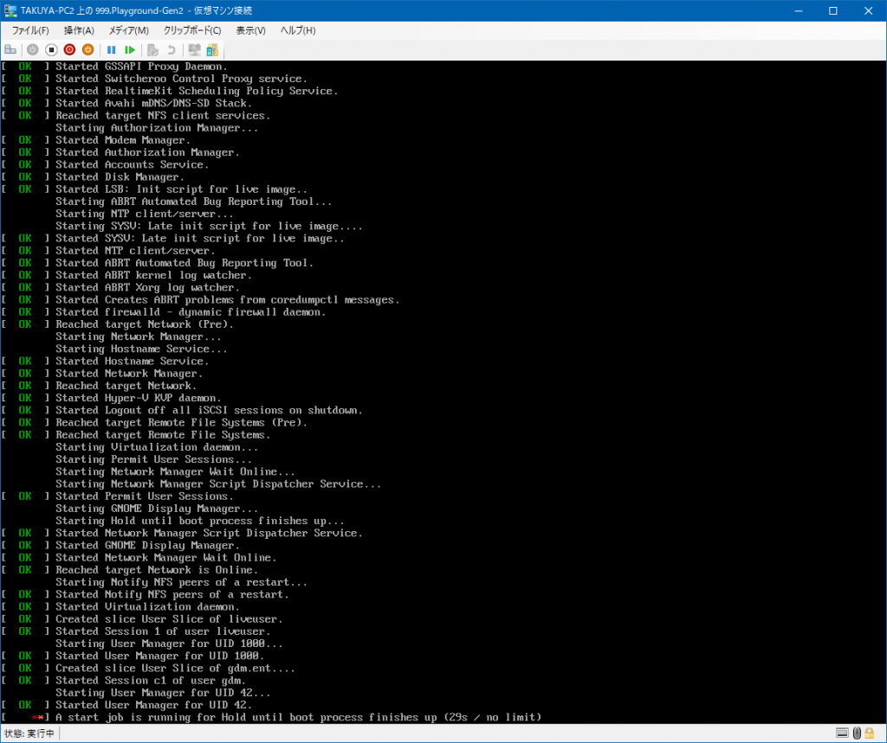
A start job is running for Hold until boot process finishes up
{kind=link}
ちなみにFedora 27は普通にインストールできます。 環境はWindows 10 1803のHyper-Vです。
Resolution
カーネル引数を弄るとGUI画面が表示できることに気づきました。 まずメニュー画面を表示します。
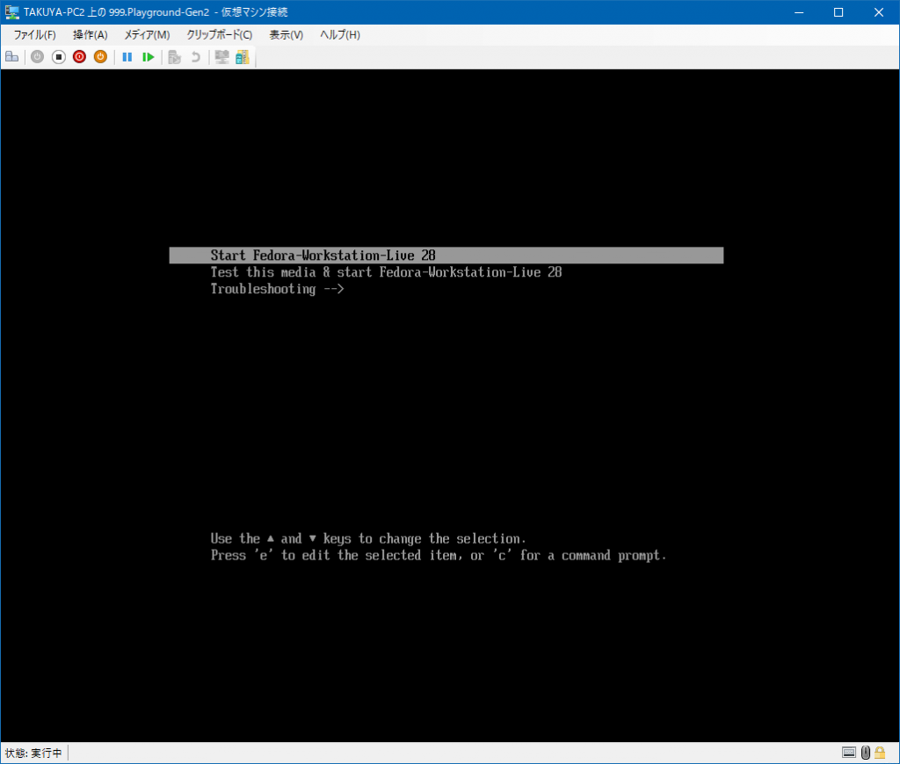
{kind=link}
eを押下してカーネル引数の編集画面に移動します。
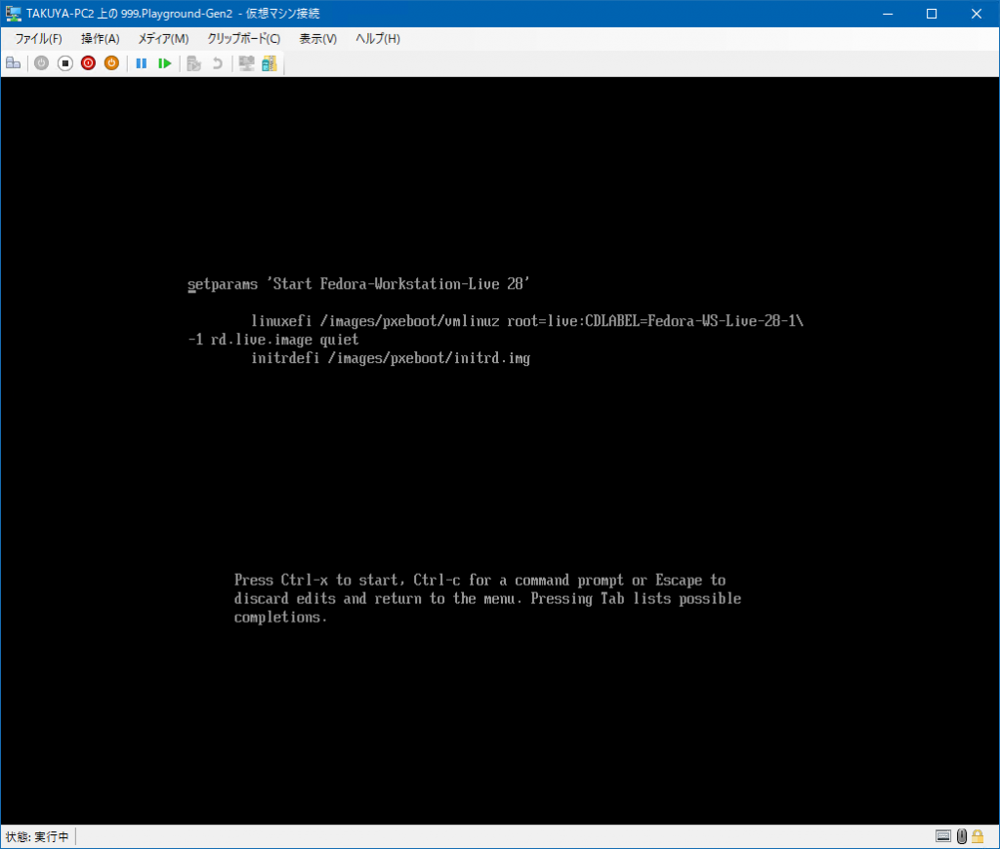
{kind=link}
rd.live.image の部分を削除します。 削除後、Ctrl+Xで起動を再開します。
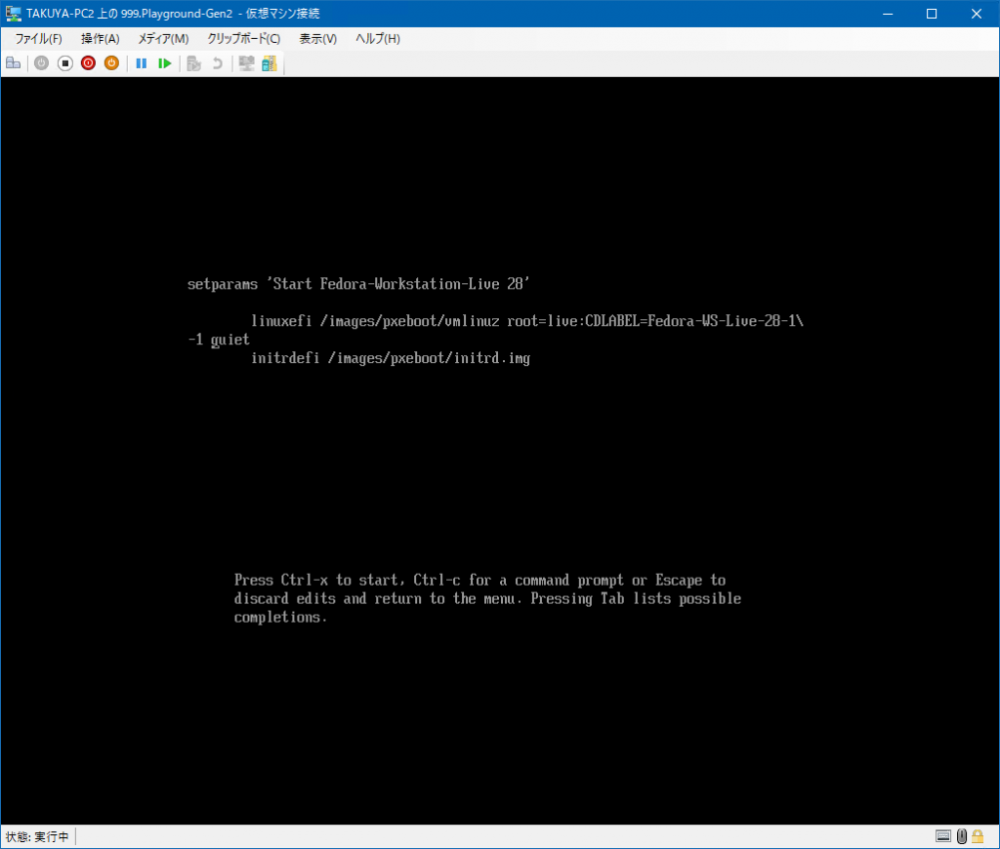
{kind=link}
ようこそ画面が表示されます。
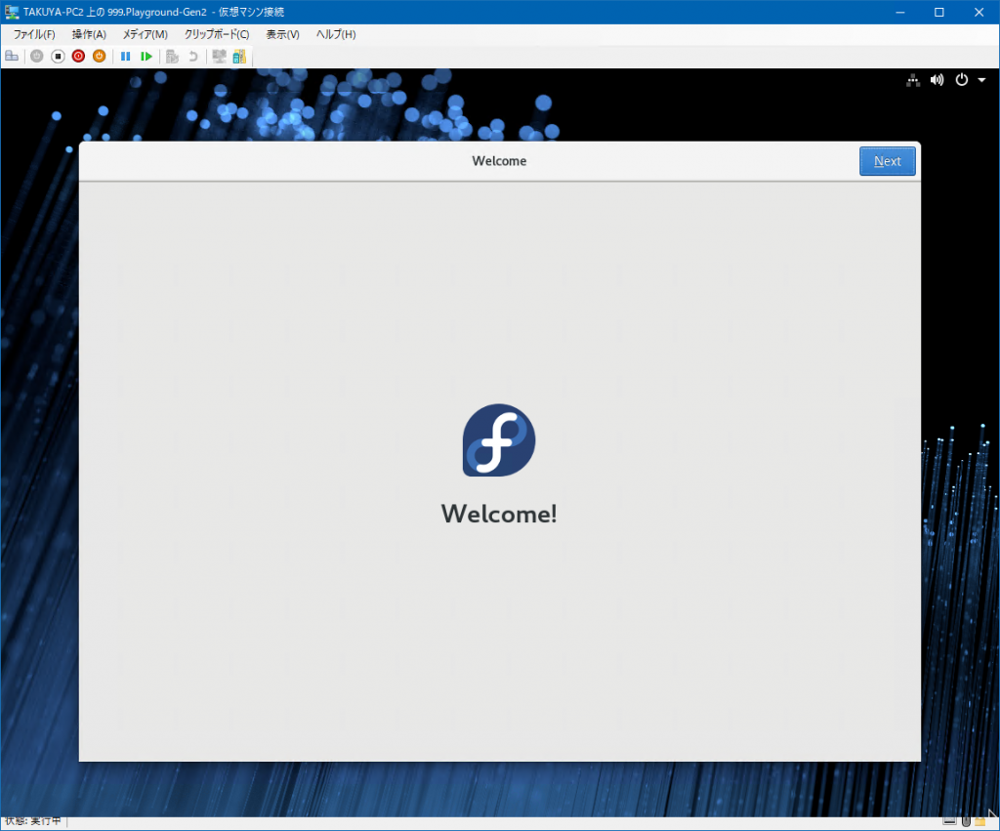
{kind=link}
{kind=link}
オンラインアカウントの設定画面が表示されます。
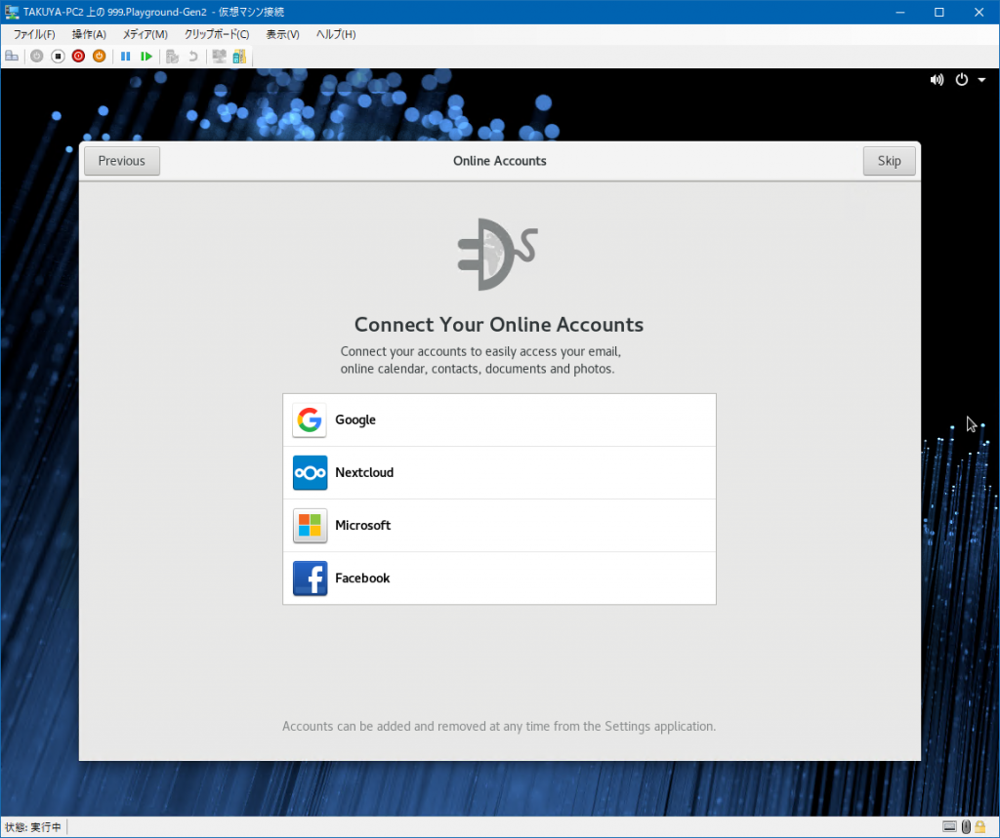
{kind=link}
アカウントの設定画面が表示されます。 ここで設定するアカウントは適当で良いです。 ハードディスクへのインストール時に再度決めることになるので。
{kind=link}
パスワードの設定画面が表示されます。 このパスワードもハードディスクへのインストール時に再度決めることになるので上書きされますが、この後rootになる必要があるため覚えておく必要があります。
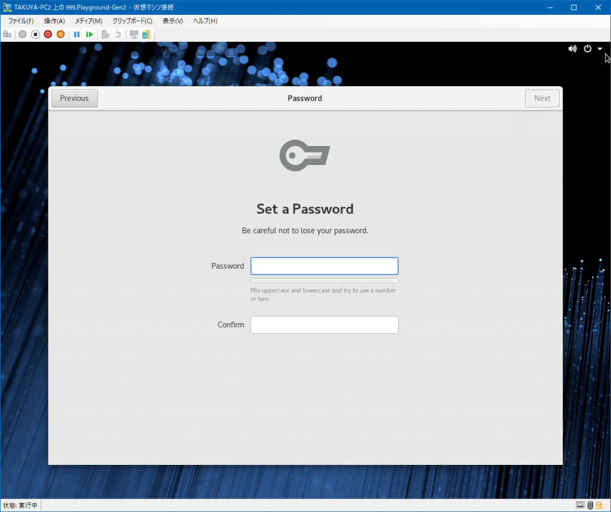
{kind=link}
設定完了です。 Start Using Fedoraでダイアログを閉じます。
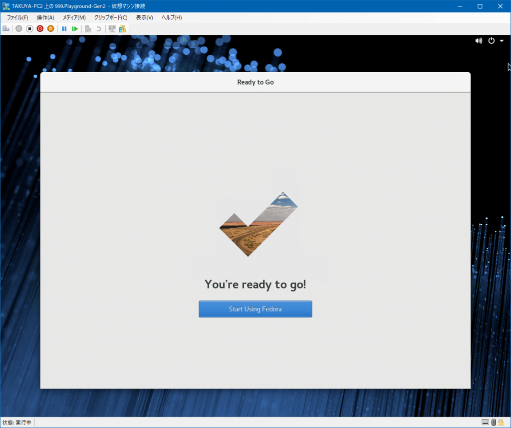
{kind=link}
少しの間コンソール画面に戻ります。
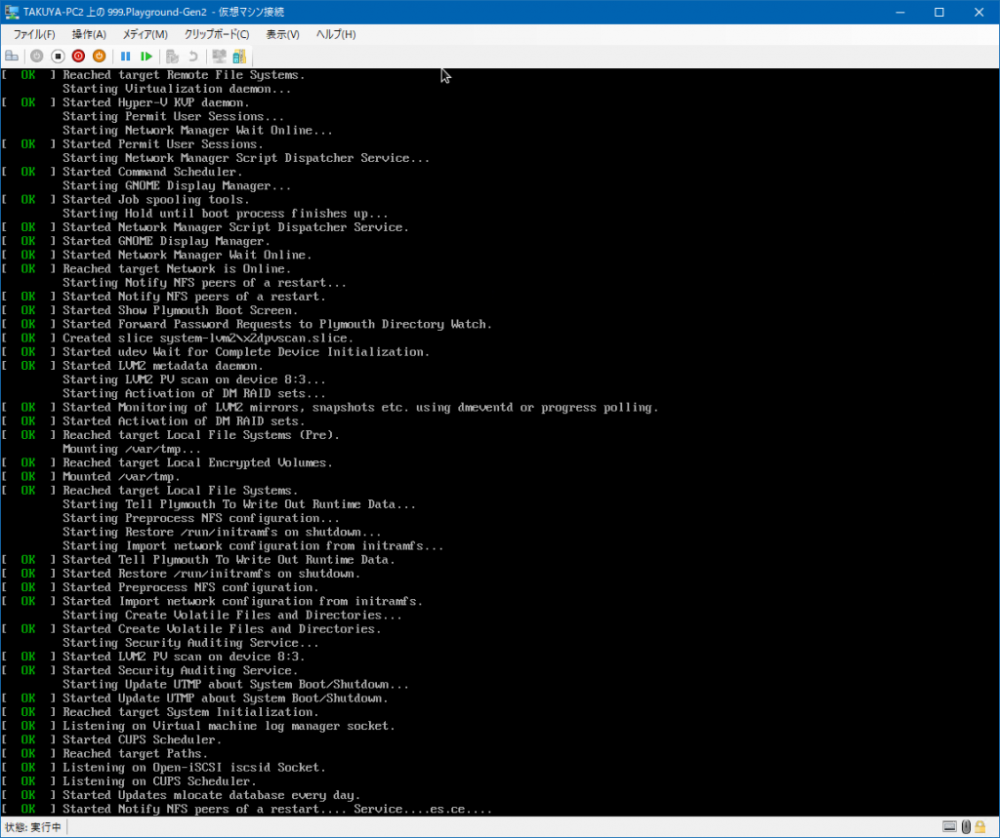
{kind=link}
再開するとヘルプが表示されます。さっさと閉じます。
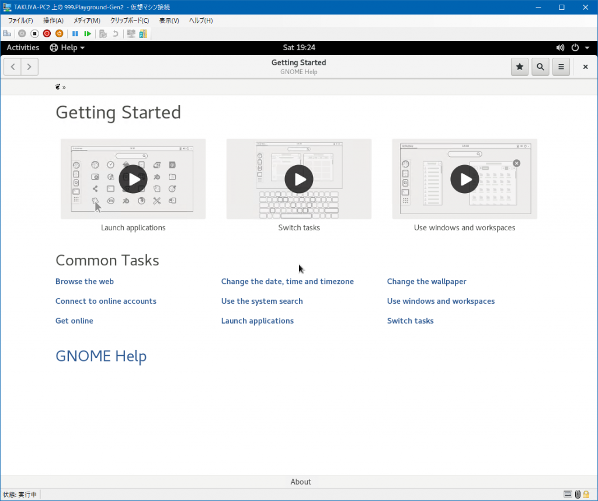 デスクトップは表示されましたが、Welcome to Fedoraのダイアログが出ないためインストールができません。 そこで、ターミナルを起動します。ActivitiesからTerminalと入力すれば起動できます。 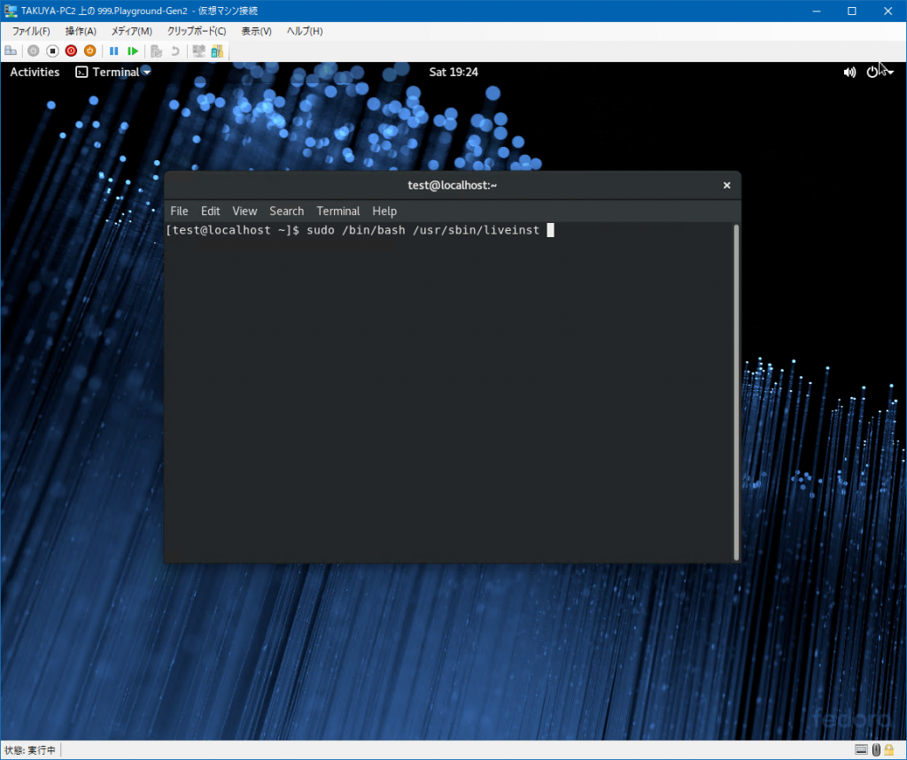
{kind=link}
{kind=link}
下記コマンドを入力します。 [code lang=”shell”] $ su $ /bin/bash /usr/sbin/liveinst [/code] しばらくするとインストール画面が起動します。 後は普通にインストールです。
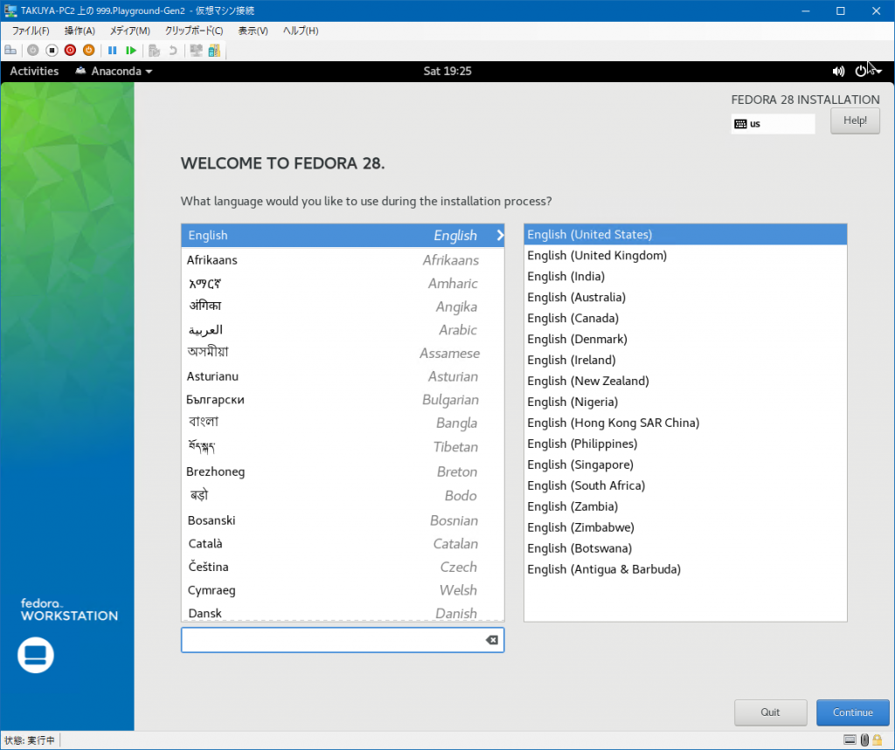
{kind=link}